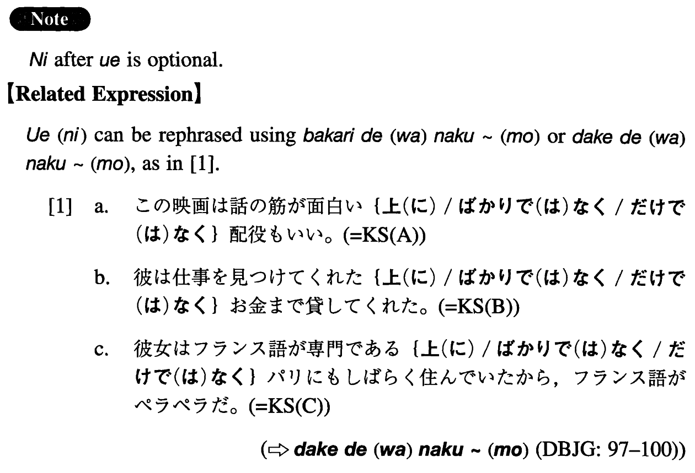

←
DoJG
→
上（に）
(I. 551)
Example sentences
(ksa).
この映画は話の筋が面白い
上（に）
配役がいい。
Besides the fact that this movie has an interesting storyline, the cast is good.
(ksb).
彼は仕事を見つけてくれた
上（に）
お金まで貸してくれた。
Not only did he find me a job, he even lent me some money.
(ksc).
彼女はフランス語が専門の
上（に）
パリにしばらく住んでいたから、フランス語かペラペラだ。
She is fluent in French because she majored in French and, in addition, she lived in Paris for a while.
(a).
吉岡さんは奥さんに離婚された
上（に）
仕事まで失った。
Not only was Mr. Yoshioka divorced by his wife, he also (literally: even) lost his job.
(b).
私は年をとっている
上（に）
特に技能もないので、なかなか仕事が見つからない。
Because I am not only old but also have no special skills, it is hard to find a job.
(c).
この車は故障が少ない
上（に）
燃費がいいので、よく売れている。
This car sells well because (besides the fact that) it seldom needs repairs (literally: seldom has trouble) and furthermore it gets good mileage.
(d).
私のアパートは狭い
上（に）
家具が沢山あるので、お客さんが来た時、寝てもらう場所がない。
Besides being small, my apartment has a lot of furniture, so there is no space for guests to sleep when they come.
(e).
私のアパートは通勤に便利な
上（に）
家賃が安い。
My apartment is convenient for commuting to work and, furthermore, the rent is inexpensive.
(f).
田中先生は教え方が上手な
上（に）
学生の面倒をよく見るから、とても人気がある。
Ms. Tanaka is very popular because she is good not only at teaching but also at taking care of her students.
(g).
彼はスピード違反で捕まった時、無免許の
上（に）
酒に酔っていた。
When he was caught for speeding, he had no driver's license (i.e., he was not licensed) and, moreover, he was drunk.
Formation
Sentence
上
(
に
)
The same as relative clause connection rules
